|
惡靈古堡～生存者４----地圖攻略
|
|
攻略內容以Recommend為準，重要道具標示綠色。
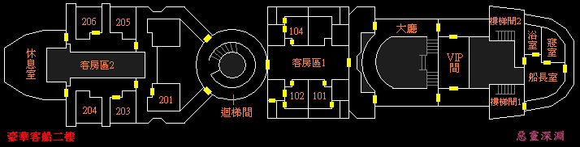 玩家一開始的位置是在豪華客船二樓104房， 拿完寢室裡的手槍彈後，就前往102房，這裡也有手槍彈。101房裡側的觀景台底部有 地圖、一等客室鑰匙。鑰匙用來打開客房區1右邊通往大廳的門，然後直接到VIP間拿客室卡片、巴黎分部的緊急通牒。 返回客房區1，用客室卡片打開另一邊的門，在迴梯間首次碰到鳳鈴，接著從迴梯下到一樓。
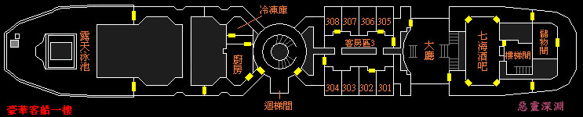 在一樓的迴梯間的地圖下方使用客室卡片，就可以打開二樓迴梯間的兩個門，開關附近有手槍彈。順道一提，從迴梯間這裡可以下 去地下一樓，下面只有手槍彈和Bruce剛剛掉下來已經壞掉的通信機。 回到二樓，無論從打開的兩扇門中哪一扇進入都通往同樣的地方，201室裡有手槍彈、綠色藥草、定期報告書No.1162。往客房區的 兩個門其中一個被反鎖了，從另外一個進入。 206房裡有靜音手槍、綠色藥草；206房和205房中央有綠色藥草；到休息室可以存個檔，這裡也有無限量的彈藥可以補充。 203房有ID卡片要拿，使用這個卡片的地方就是剛剛使用客室卡片的迴梯間。使用卡片之後就可以打開一樓迴梯間這裡的兩扇門。 先往廚房，有手槍彈、綠色藥草可拿；到冷凍庫有散彈槍、散彈，小心離開時被僵屍夾擊，跑快一點開門出去。回到走廊上，前方 通往露天泳池的門是反鎖的，走上面的，上面被封鎖的門前有手槍彈。 露天泳池尾部的操控台上插有一把整備士的鑰匙，順便拿到一份管理報告2002/9/16，到手後回頭到迴梯間，從另一扇門進入。 這區的客房只有兩間可以進去，302房有半自動手槍，305房有手槍彈、綠色藥草。用整備室的鑰匙打開通往大廳的鐵捲門 ，大廳的 樓梯旁有綠色藥草。 現在的目的地是儲物間，但是建議可以先去七海酒吧，雖然以後也可以去，但是現在去一隻僵屍也沒有，很適合蒐集道具，裡面有 手槍彈 x 2、綠色藥草、侍應的信。 儲物間是個大寶庫，有貨物擔當乘務員的日記、手槍彈、轉盤、散彈、綠色藥草。出去之後就要轉換成鳳鈴了。 鳳鈴帶著轉盤前往露天泳池，途中經過客房區3的時候，308號房會有僵屍衝出來，裡面有綠色藥草。到露天泳池後調查之前拿到整 備士的鑰匙的地方，這時Bruce剛好趕上，正當要用轉盤打開鐵蓋時，竄出兩隻獵人，Bruce要負責對付牠們來掩護鳳鈴，泳池前面有 手槍彈，需要時可以拿來用。把兩隻獵人解決之後，鳳鈴也順利打開了，前進到地下一樓鍋爐室。
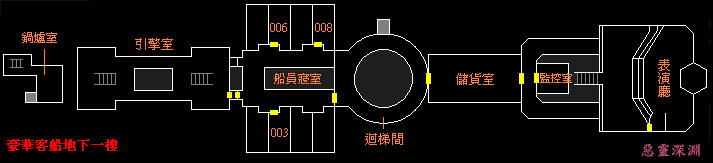 這裡有無限彈藥補充，順便存個檔，然後搭乘升降梯到地下二樓鍋爐室。
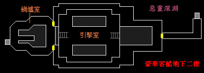 鍋爐室中央有綠色藥草，前往右側升降梯的途中會經過長長的走廊，下面這條比較好走，而且中途有綠色藥草，走道一半會有一堆 僵屍衝出來，最好不要停留太久，搭底部的升降梯前往地下一樓迴梯間。 迴梯間牆壁上有地圖，經過儲貨室到監控室前走廊，這有手槍彈可拿，然後到表演廳。表演廳客座角落有綠色藥草，舞台旁邊有研 究報告#220329、鐵撬。正當要離開的時候，一個不男不女的怪物跑了出來，原來他就是Morpheus，而且無論怎麼射他都沒有用，只 好先跑為妙。逃到儲貨室的時候注意一下這裡四周有八個箱子，用鐵撬撬開箱子，其中一個箱子裡面有船員卡片，有些箱子裡隨機 可能放有道具。 拿到船員卡片後就往船員寢室的方向避難，正巧遇到鳳鈴，角色切換成鳳鈴。 鳳玲的任務是要恢復電力系統，從地下一樓的引擎室下樓到地下二樓，開關就在地圖上地下二樓引擎室左上角，恢復後回地下一樓 解除電子鎖，接著就去把Bruce放進來吧。 現在外面已經安全了，去探索船員寢室，008號房有散彈、地圖，006號房有綠色藥草，003號房有手槍彈。 回到監控室前走廊，由於剛剛已經把電力打開，監控室的門也打開了，裡面除了可以補充彈藥、存檔，還有急救噴霧、更迭通知書 、娛樂室的鑰匙。 在表演廳的客座後方有一個開關，打開後就開啟了旁邊樓梯往一樓大廳的通道。
剛才拿到的娛樂室的鑰匙是用在七海酒吧旁邊的小門，也就是通往樓梯間，再從樓梯往二樓樓梯間1。
從樓梯間1到船長室，船長室辦公桌上有航海日誌，船長變成的僵屍突然蹦出來，這隻僵屍比較耐打，要小心一點。寢室裡有麥林 手槍和麥林子彈，千萬別忘了。從樓梯間2上到三樓樓梯間。
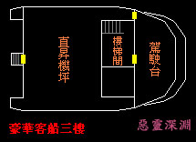 三樓樓梯間有手槍彈，進入駕駛台。到駕駛台才發現，客船快要撞上了，時間倒數五分鐘，離開前記得帶走桌上的散彈。 當逃到直昇機坪時，卻遇到Tyrant091擋路，看來不給他點顏色瞧瞧是不行的。他的弱點就在於牠背上外露的心臟，當他受到一定攻 擊時，就會半跪在地上，這時就是重重給牠傷害的時候，某個角落有手槍彈，不夠用的話就去拿吧。 千鈞一髮之際，Bruce跳海逃生，意外地來到Umbrella的地盤，Morpheus似乎也在這呢。
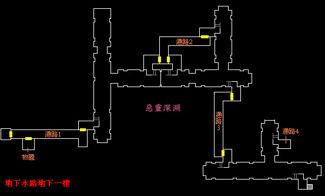 Bruce一開始的位置在通路1附近，先去物置補充一下彈藥，這裡還有綠色藥草、作業員的手記、生態調查報告1。通路1底部有榴彈 槍。照著地圖經過通路2到通路3，通路3出口處有榴彈、通路4有手槍彈，接著請搭右下角的升降機到一樓。 （地圖略）一樓什麼都沒有，只要調查前面的面板就可以和總部通信。角色切換成鳳鈴。
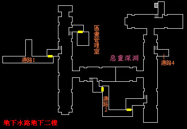 鳳鈴一開始的位置在地下二樓通路1，這裡有綠色藥草、地圖。然後先到通路2前，有個屍體手上握有區畫管理室的鑰匙，拿到鑰匙 當然要到區畫管理室去，管理室裡有手槍彈 x 2，最重要的是打開電子鎖，之後就可以前往通路2。 通路2出口處有手槍彈，通路4有急救噴霧，然後搭乘右上方的升降梯到地下三樓。
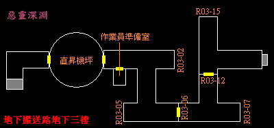 現在的位置在地圖左方的走廊上，跑到底就可以到直昇機坪。在直昇機坪鳳鈴遭到攻擊，幸好Bruce及時出手相救，為了讓鳳鈴冷靜 一下，Bruce獨自離開了。 作業員準備室中可以存檔和補充彈藥，其他還有榴彈、地圖、生態調查報告2、實驗體a的紀錄、急救噴霧。一路上都沒有其他道具 ，直接到底部搭升降梯到地下四樓。
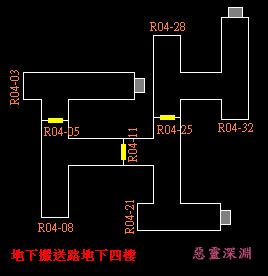 下來的位置在左上方也就是R04-03附近的升降梯，在R04-11門附近有綠色藥草，然後請先選擇下方的升降梯到地下五樓。
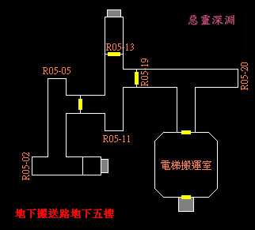 來到R05-02附近，這裡雖然有兩扇門，可以都無法開啟，來這的目的是要拿屍體旁的電梯啟動卡片，當然還有一旁的麥林子彈。 回到地下四樓，這次改走上方的升降梯，向下到地下五樓R05-13附近，在R05-02底部有散彈，R05-11和R05-20底部有綠色藥草。 準備一下就到電梯搬運室用電梯啟動卡片啟動搬運電梯吧，可惜事情沒有這麼順利，冥王在這時跑出來阻擋，由於冥王攻擊力強， 一旦發現目標攻擊的速度也非常快，牠的缺點是牠的視覺已經退化，所以安靜地攻擊才是保命之道，玩家應該有注意到附近有很多 的手槍彈，就是為了讓玩家使用靜音手槍來戰鬥，要注意只能用走的，否則被牠發現行蹤，他會瘋狂的在後面緊追不捨，如果他開 始狂奔起來，這時牠差不多要攻擊個幾下，就會跌倒在地，趁這個機會離他遠點，牠起身後又會開始東聽西聽了。攻擊的部位是頭 部，在受一定攻擊後頭部會垂吊下來，這時再對頭部補個幾槍就可以擊倒。 要搭電梯時鳳鈴也來了，只是遇到Morpheus搞破壞，兩人又被迫分隔兩地。
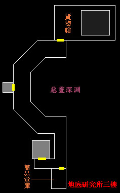 鳳鈴的位置在研究所三樓簡易倉庫前，倉庫裡可以存檔。在接近中央電梯附近的牆上有個垃圾廢棄口，在無路可走的情況下只好從 這裡下去了，到達一樓清潔入口。
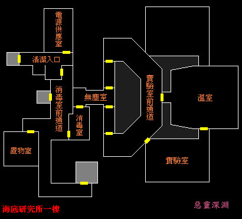 首要的任務是恢復供電，理所當然來到電源供應室，調查一下就可以打開電源。回到清潔入口，左側的電梯可以使用了，搭乘到達 研究所地下一樓，卻不幸被Morpheus抓個正著，切換回Bruce。 Bruce目前在一樓消毒室前通道下方的電梯前，置物室前有綠色藥草，置物室裡有手槍彈 x 2、Port發著場卡片、設計者的Memo、地 圖。搭乘消毒室前通道的中央電梯到三樓。
用Port發著場卡片打開通往貨物艙的門，裡面有綠色藥草 x 2、錄音機，然後再搭乘電梯到二樓。
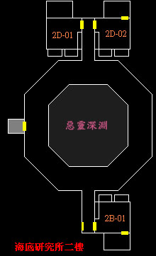 2B-01門前有綠色藥草，裡面有Morpheus的指令書。2D-02裡有散彈、研究報告#220120。2D-01裡在電腦前使用錄音機，將聲音錄製下 來。 搭電梯回到一樓，在消毒室前使用錄音過的錄音機，就可以把門打開。消毒室裡有來福槍，經過實驗室前通道到溫室。 溫室裡靠近實驗室的門前有來福槍彈，只是沒想到一接近，門竟然堵了起來，而且跑出一隻女王蜂，看來沒有打贏是別想離開了， 女王蜂沒有攻擊性，但是會生出一大堆有攻擊性的蜜蜂，所以當務之急還是要先把女王蜂打倒，小隻的不打也沒關係。勝利後就可 以進入實驗室了。 實驗室裡有一把看起來挺不賴的荷電粒子來福，拿到後後面突然跑出幾隻僵屍，可以先拿這隻槍來試試威力，這把最終武器沒有彈 藥數的限制，但是每攻擊一次就要蓄電，不過不用擔心，蓄電的速度很快。在僵屍跑出來的地方有一具屍體，身上有私人鑰匙，在 艙外角落裡有荷電粒子來福使用手冊。 剛入手的私人鑰匙是用來打開置物室前通道通往清潔入口的門，打開之後追尋鳳鈴的腳步，搭電梯到研究所地下一樓。
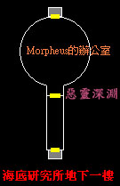 這裡有間Morpheus的辦公室，椅子上有一本我理想中的王國，而椅子下面還有機關，打開後後方出現一個升降梯，這時Morpheus的 臉突然出現在螢幕上，這才發現鳳鈴被Morpheus抓起來了。搭升降梯到地下二樓武器格納庫。
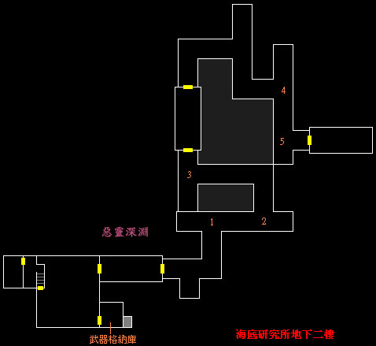 武器格納庫除了存檔外，還有許多武器恢復藥，看到有這麼多東西，就知道等下一定沒好事。這裡有急救噴霧、綠色藥草、榴彈、 散彈、來福槍彈。 接著就是和Morpheus的殊死戰了，對付他只能用荷電粒子來福，還好他非常注重氣質只用走的，只要躲到遠方柱子後面，朝著慢慢 走來的Morpheus持續開槍，他一接近就再跑走，持續幾回就可以勝利了。終極迅速攻略法，就是利用這些柱子，讓Morpheus傻傻地 被卡在柱子後面，然後只要從柱子的縫隙間射擊，輕輕鬆鬆把他擊倒。 為了要阻止導彈發射，鳳鈴留著幫Bruce指示路，只要遵照她的指示走就行了，不過路上有一些道具，在此提示一下。在Morpheus追 來之後，一進通路就看到綠色藥草，岔路1左邊盡頭有手槍彈，岔路2右邊盡頭有急救噴霧，岔路2和3之間有手槍彈，岔路3左邊盡頭 有手槍彈。中途因為必須等鳳鈴打開門鎖，只好先和Morpheus戰鬥一次，第二型態的他用龐大的身軀來迫近玩家，唯有攻擊他紅色 的頭部才可以讓他後退，如果隨便亂打都沒打重要害，反而會使他加速前進，這裡的目旳只是要爭取時間，而不是打倒他，所以可 以用來福槍來攻擊，再提醒一次，只是要讓他後退而已，不用太浪費彈藥，若是射擊技術不好讓他逼近了，就用榴彈槍或是麥林擊 退。 門打開後繼續前進，岔路4左邊盡頭有手槍彈，岔路5下方盡頭有麥林彈，然後進入最終決戰。 方法和第一戰相同，可以放心把所有壓箱武器拿出來用，如果射中頭部的話可以連續開槍，因為這戰的目的是要打倒他，接著就看 結局囉。 未經許可禁止轉載連結 |
惡靈深淵Biohazard Abyss http://98.to/coolbio